The basic principles of radar operation are rather simple to understand. The underlying theory, however, can be quite complex. Understanding the various elements involved is essential to specify and operate primary radar systems correctly.
The implementation and operation of primary radar systems involve a wide range of disciplines such as building and civil engineering, heavy mechanical and electrical engineering, high-power microwave engineering, and advanced high-speed signal and data processing techniques. One could argue that a basic interpretation of the laws of nature also needs to be understood for a successful radar deployment.
Radar measurement of range, or distance, is made possible because of the properties of radiated electromagnetic energy.
These principles can be implemented in radar systems to determine the distance, the direction and the height of the reflecting object.
Radar has many advantages compared to an attempt at visual observation:
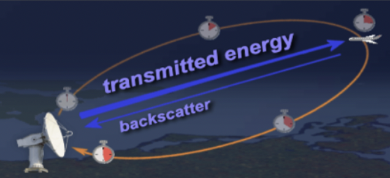
The electronic principle on which radar operates is very similar to the principle of sound-wave reflection. If you shout in the direction of a sound-reflecting object (like a rocky canyon or cave), you will hear an echo. If you know the speed of sound in air, you can then estimate the distance and general direction of the object. The time required for an echo to return can be roughly converted to distance if the speed of sound is known.
Radar uses electromagnetic energy pulses in much the same way. The radio frequency (RF) energy is transmitted to and reflected from the reflecting object. A small portion of the reflected energy returns to the radar set. This returned energy is called an echo, just as it is in sound terminology. Radar sets use the echo to determine the direction and distance of the reflecting object.
The term RADAR is an acronym made up of the words ra(dio) d(etection) a(nd) r(anging).
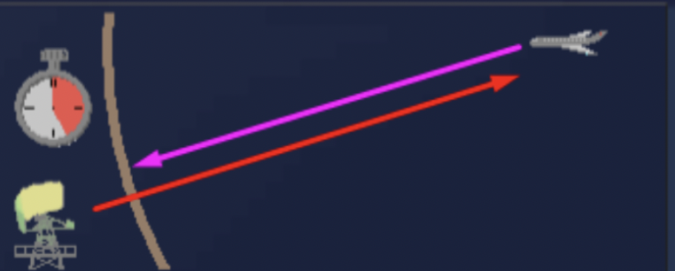
The following figure shows the operating principle of a primary radar set. The radar antenna illuminates the target with a microwave signal, which is then reflected and picked up by a receiving device. The electrical signal picked up by the receiving antenna is called an echo or return. The radar signal is generated by a powerful transmitter and received by a highly sensitive receiver.
All targets produce a diffuse reflection; that is, the signal is reflected in a wide number of directions. The reflected signal is also called scattering. Backscatter is the term given to reflections in the opposite direction to the incident rays.
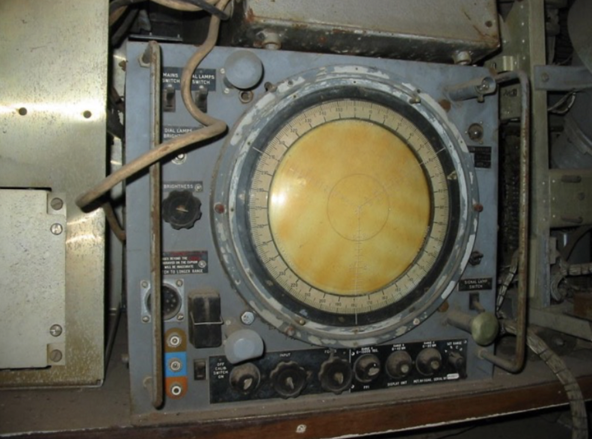
Radar signals can be displayed on the traditional plan position indicator (PPI) or other more advanced radar display systems. A PPI has a rotating vector with the radar at the origin, which indicates the pointing direction of the antenna and hence the bearing of targets.
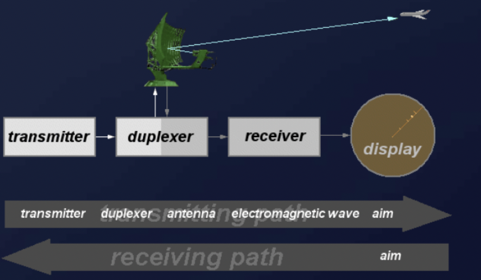
The radar transmits a short radio pulse with very high pulse power. This pulse is focused in one direction only by the directivity of the antenna, and propagates in this given direction with the speed of light.
If there is an obstacle in this direction (e.g., an airplane), then a part of the energy of the pulse is scattered in all directions. A very small portion is also reflected back to the radar. The radar antenna receives this energy and the radar evaluates the contained information.
The distance can be measured with an oscilloscope. A light indicator on the oscilloscope moves synchronously with the initial pulse. When the antenna receives the echo pulse, this pulse is also shown on the oscilloscope. The distance between the two shown pulses on the oscilloscope is a proportional measurement of the distance between the radar system and the aircraft.
Since the propagation of radio waves happens at constant speed (the speed of light), this distance is determined from the runtime of the high-frequency transmitted signal. The actual range of a target from the radar is known as the slant range. Slant range is the line-of-sight distance between the radar and the object illuminated. Ground range, on the other hand, is the horizontal distance between the emitter and its target along the ground. Therefore, slant range requires knowledge of the target's elevation. Since the waves travel to a target and back, the round-trip time is divided by two in order to obtain the time the wave took to reach the target.
Where:
The distances are expressed in kilometers or nautical miles (1 NM = 1.852 km).
Range is the distance from the radar site to the target measured along the line of sight.
The factor of two in the equation comes from the observation that the radar pulse must travel to the target and back before detection, or twice the range. Here c is the speed of light at which all electromagnetic waves propagate.
If the respective running time t is known, then the distance R between a target and the radar set can be calculated by using this equation.
The angular determination of the target is determined by the directivity of the antenna. Directivity, sometimes known as the directive gain, is the ability of the antenna to concentrate the transmitted energy in a particular direction. An antenna with high directivity is also called a directive antenna. By measuring the direction in which the antenna is pointing when the echo is received, both the azimuth and elevation angles from the radar to the object or target can be determined. The accuracy of angular measurement is determined by the directivity, which is a function of the size of the antenna.
Radar units usually work with very high frequencies. The reasons for this are:
The true bearing (referenced to true north) of a radar target is the angle between true north and a line pointed directly at the target. This angle is measured in the horizontal plane and in a clockwise direction from true north. (The bearing angle to the radar target may also be measured in a clockwise direction from the centerline of your own ship or aircraft and is referred to as the relative bearing.)
The antennas of most radar systems are designed to radiate energy in a one-directional lobe or beam that can be moved in bearing simply by moving the antenna. As you can see in the figure below, the shape of the beam is such that the echo signal strength varies in amplitude as the antenna beam moves across the target. In actual practice, search radar antennas move continuously; the point of maximum echo, determined by the detection circuitry or visually by the operator, is when the beam points directly at the target. Weapons control and guidance radar systems are positioned to the point of maximum signal return and maintained at that position either manually or by automatic tracking circuits.
In order to have an exact determination of the bearing angle, a survey of the north direction is necessary. Older radar sets must therefore be expensively surveyed, either with a compass or with the help of known trigonometric points. More modern radar sets take on this task with help from GPS satellites to determine the north direction independently.
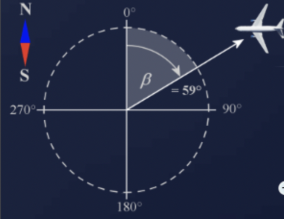
The rapid and accurate transmission of the bearing information between the turntable with the mounted antenna and the scopes can be carried out for:
Servo systems are used in older radar antennas and missile launchers and work with the help of devices like synchro torque transmitters and synchro torque receivers. In newer radar units we find a system of azimuth change pulses (ACP). In every rotation of the antenna, a coder sends many pulses that are then counted in the scopes.
Newer radar units work completely without, or with only partial, mechanical motion. These radars employ electronic phase scanning in bearing and/or in elevation (phased array antenna).
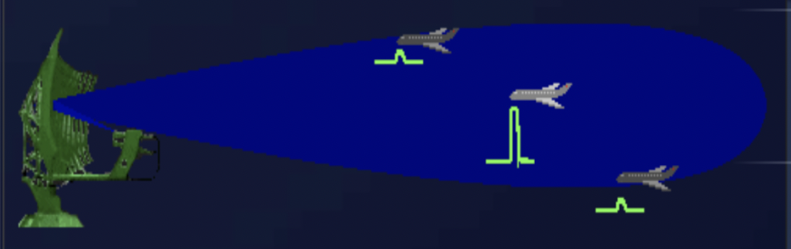
The maximum unambiguous range (Rmax) is the longest range to which a transmitted pulse can travel out and back again between consecutive transmitted pulses. In other words, Rmax is the maximum distance radar energy can travel round trip between pulses and still produce reliable information.
The relationship between the PRF (or its reciprocal value, the interpulse period T, or PRT) and Rmax determines the unambiguous range of the radar. Suppose the radar emits a pulse that strikes a target and returns to the radar in round-trip time t:
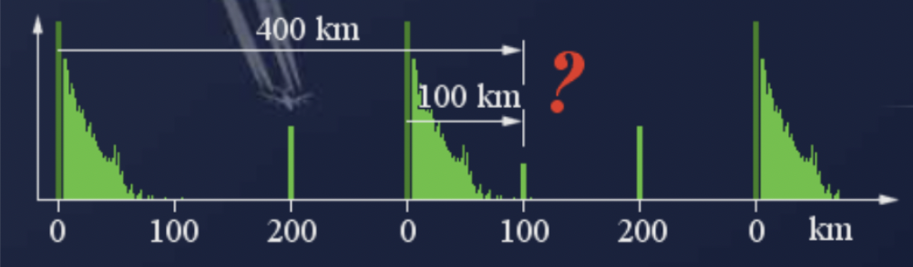
In the figure above, the first transmitted pulse, after being reflected from the target at 200 km, is received by the radar before the second pulse is transmitted. There will be no ambiguity here, as the reflected pulse can be easily identified as a reflection of the first pulse. But in the same figure, we notice that the reflection of a target from the first pulse is received after the second pulse has been transmitted (a range of 400 km). This causes some confusion since the radar, without any additional information, cannot determine whether the received signal is a reflection of the first pulse or of the second pulse. This ambiguity in the received echo signal makes it unclear whether the echo is actually a short-range echo of the next cycle.
Therefore, the maximum unambiguous range Rmax is the maximum range for which t < T.
Where:
The factor of 2 in the formula accounts for the pulse traveling to the target and then back to the radar. The length of the transmitted pulse (pulse width τ) in this formula indicates that the complete echo impulse must be received. Often, the entire pulse length must first be processed to detect a target. If the transmitted pulse is very short in relation to the pulse period, it can be ignored. Ignoring pulse length, the maximum unambiguous range of any pulse radar can be computed with the pulse repetition frequency (PRF), measured in hertz.
Example: Consider a radar with a pulse repetition frequency of 1,000 Hz. The pulse period is its reciprocal value and is 1 / 1,000 = 1 millisecond. According to our formula, the maximum unambiguous range of this radar is 150 km. If the radar receives an echo signal with a runtime of 100 microseconds, the results are difficult to interpret. This target with a runtime of 100 microseconds could have originated from a distance of 15 km, as well as from a target at 165 km.
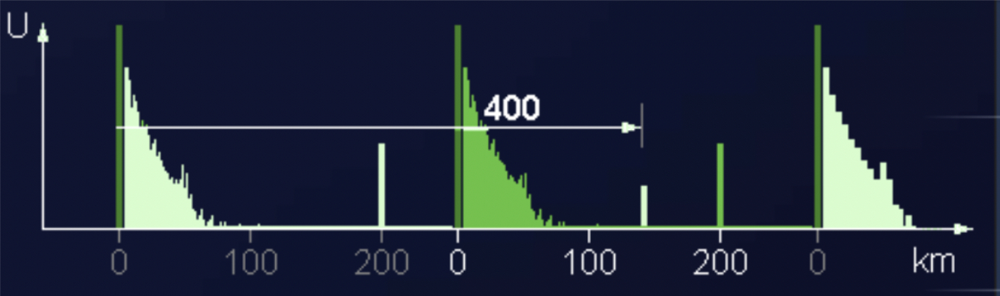
The pulse repetition time (PRT) of the radar is important when determining the maximum range because target return times that exceed the PRT of the radar system appear at incorrect locations (ranges) on the radar screen. Returns that appear at these incorrect ranges are referred to as ambiguous returns, second-sweep echoes or second-time-around echoes.
By employing staggered PRT, the target's ambiguous return is not represented by a small arc on an analog display. This movement, or instability, of the ambiguous returns is represented typically as a collection of points because of the change in reception times from impulse to impulse. With this distinction, a computer-controlled signal processor can calculate the actual distance involved and filter out false echoes.
The figure below shows a target's return by the primary radar (thick, shorter arc) and an IFF answer reply of the IFF interrogator (thin, longer arc), and a second-sweep answer of the IFF by using staggered PRT on a PPI scope. Here you can see as well that the interrogator does not use every primary synchronous pulse. If we were to use a fixed PRT, we would see ambiguous returns similar to unambiguous returns (arcs).
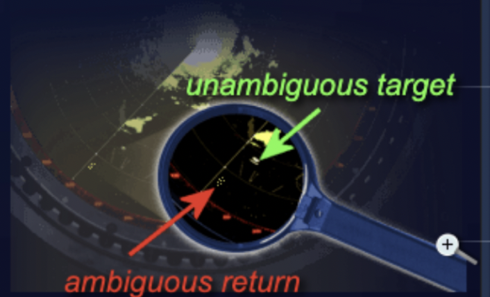
More modern 3D radar sets with phased array antennas do not have this problem with ambiguous range. The system computer steers the transmitted beams so that ambiguous returns from the previous pulses are not received while the antenna beam points in another direction. If the radar uses intrapulse modulation and a different waveform in each transmit pulse, the maximum unambiguous measuring distance is of no significance for the radar. Each received echo signal can be assigned to exactly its origin (the individually transmitted pulse), and thus the runtime over several pulse periods can be measured.
Another exception could be radar sets in satellites for the remote sensing of the earth. The general height of the orbit is known, so the only accurate results would be those that differ by a few kilometers from the height of the orbit. Going back to our figure above, at an altitude of 400 km only the measurement result received in the second pulse period would be valid.
Monostatic pulse radar sets use the same antenna for transmitting and receiving. During the transmitting time the radar cannot simultaneously receive. The radar receiver is switched off using an electronic switch called a duplexer. The minimal measuring range Rmin (the blind range) is the minimum distance that the target must have to be detected. Specifically, it is necessary for the transmitting pulse to leave the antenna completely and for the radar unit to switch on the receiver. The transmitting time τ and the recovery time should be as short as possible if you are trying to detect targets close by.
Targets at a range equivalent to the pulse width from the radar are not detected. A typical value of 1 microsecond pulse width for a short-range radar corresponds to a minimum range of about 150 meters. This is typically acceptable in most applications. Radar with longer waveforms suffers a larger minimum range. One example is a pulse compression radar, which can use pulse lengths on the order of tens or even hundreds of microseconds. Targets at ranges closer than this minimum are said to be eclipsed.
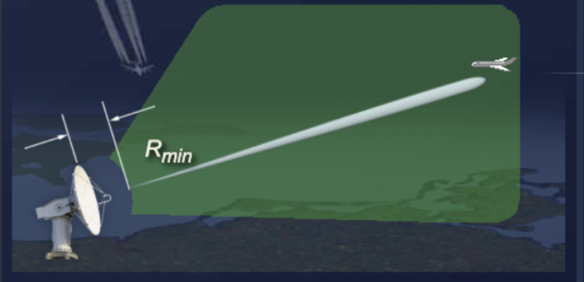
Elevation angle is the angle between the horizontal plane and the line of sight, measured in the vertical plane. The reference direction (an elevation angle of zero degrees) is a horizontal line in the direction of the horizon, starting from the antenna. The elevation angle is often denoted by the Greek letter epsilon. It is positive above the horizon and negative below the horizon.
Altitude or height-finding radar uses a very narrow fan beam in the vertical plane. Height-finding radar systems that also determine bearing must have a narrow beam in the horizontal plane in addition to the one in the vertical plane. The beam is mechanically or electronically scanned in elevation to pinpoint targets. If an echo signal is detected in the receiver, then the current elevation angle is equal to the direction of the antenna pattern.
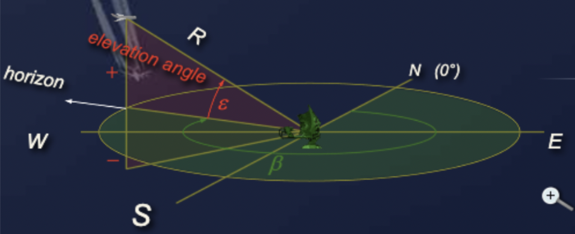
The target resolution of radar is its ability to distinguish between targets that are very close in either range or bearing. Weapons control radar, which requires great precision, should be able to distinguish between targets that are only yards apart. Search radar is usually less precise and only distinguishes between targets that are hundreds of yards or even miles apart. Resolution is usually divided into two categories: range resolution and bearing resolution.
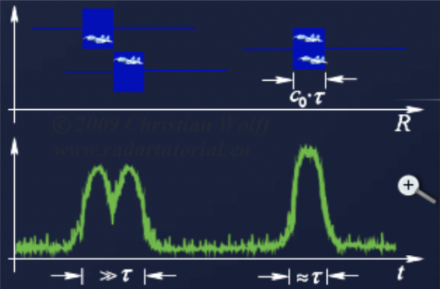
Range resolution is the ability of a radar system to distinguish between two or more targets on the same bearing but at different ranges. The degree of range resolution depends on the width of the transmitted pulse, the types and sizes of targets, and the efficiency of the receiver and indicator. Pulse width is the primary factor in range resolution. A well-designed radar system, with all other factors at maximum efficiency, should be able to distinguish targets separated by one-half the pulse width time τ. The theoretical range resolution cell of a radar system can therefore be calculated from the related equation.
The following figures show the range resolution for a pulse width of one microsecond. If the spacing between two aircraft is too small, then the radar will report only one target.
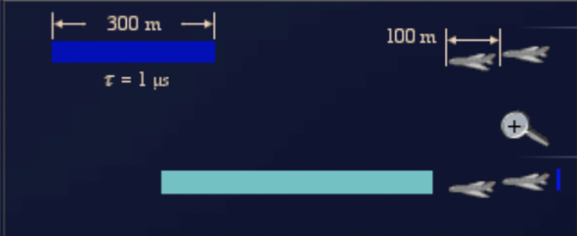
Another example showing reasonable spacing between targets:
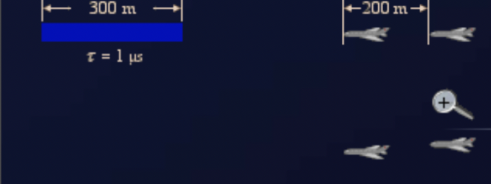
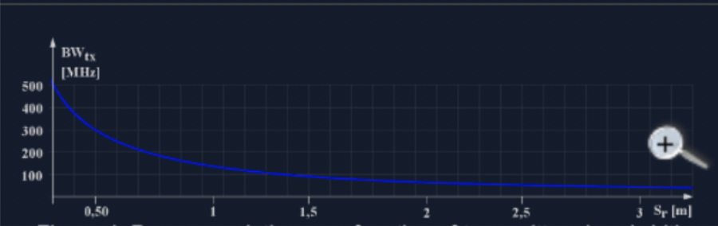
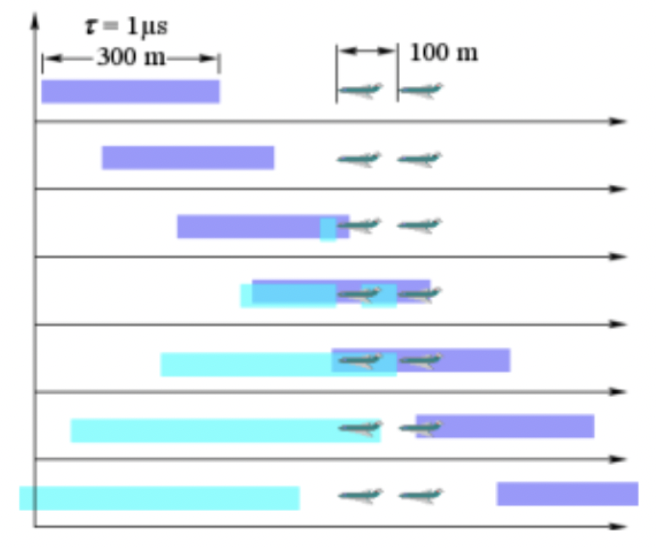
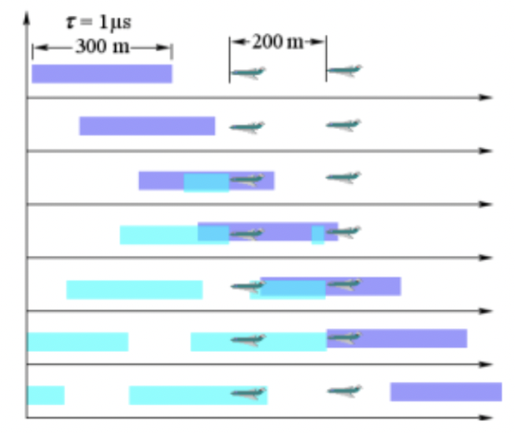
Benchtop testing and qualification of range resolution are accomplished in the lab by simulating the pulses from the radar system and varying the delay and timing properties of the pulses. Berkeley Nucleonics offers a suite of benchtop pulse generators for this exact purpose. As radar systems improve, the timing parameters of the benchtop test equipment used to test and calibrate transmitters and receivers have also improved. The latest benchtop test equipment from Berkeley Nucleonics resolves time in femtoseconds with minimum pulse widths in the picosecond range. These performance specifications enable the characterization of today's most demanding radar schemes. More material on pulse and delay generator applications (radar, quantum computing, laser timing, synchronization of experiments, component testing, fiber verification, and more) is available online at berkeleynucleonics.com.
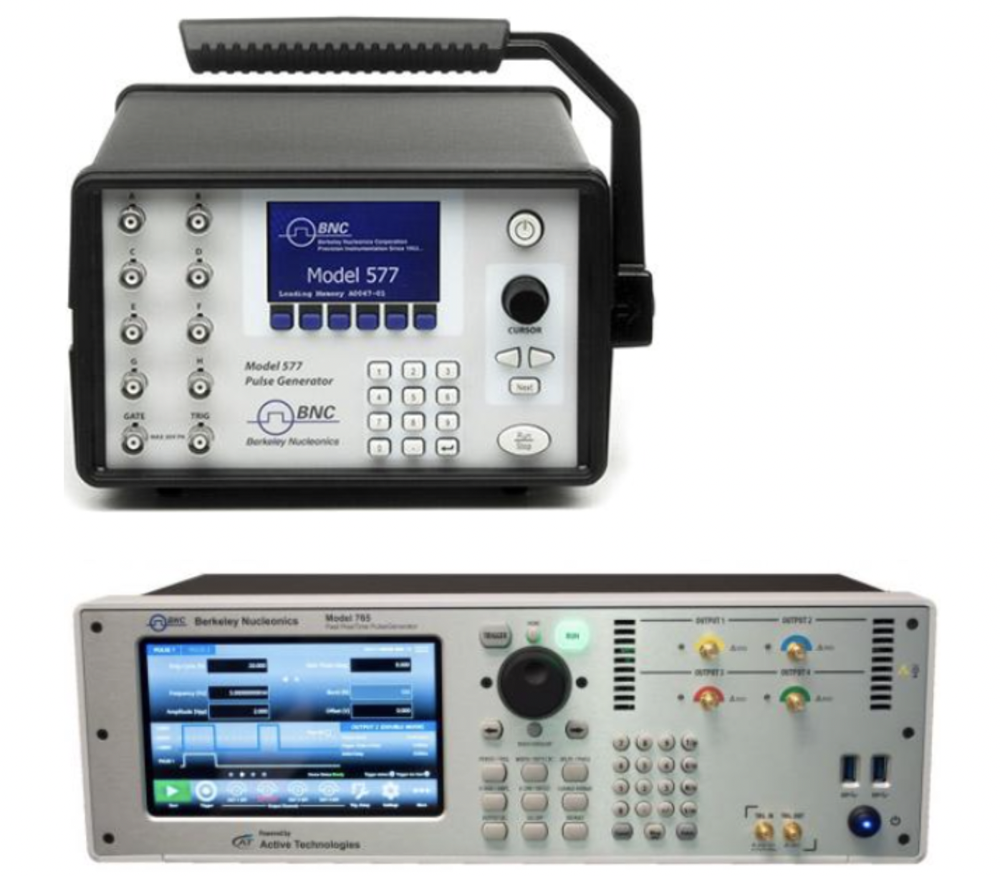
The range and angular resolutions lead to an area called the resolution cell. The meaning of this cell is clear: unless one can rely on differing Doppler shifts, it is impossible to distinguish two targets located inside the same resolution cell. The shorter the pulse width τ (or the broader the spectrum of the transmitted pulse) and the narrower the aperture, the smaller the resolution cell.
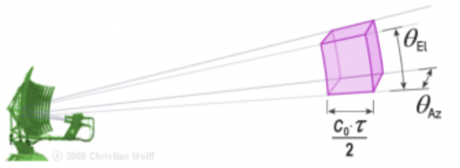
The radar equation represents the physical dependencies of the transmit power, that is, the wave propagation up to the receiving of the echo signals. Furthermore, one can assess the performance of the radar with the radar equation. The received energy is an extremely small part of the transmitted energy. The following equation represents this calculation.
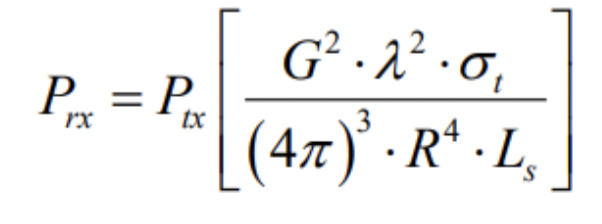
Ptx is the peak power transmitted by the radar. This is a known value of the radar. It is important to know because the power returned is directly related to the transmitted power.
Prx is the power returned to the radar from a target. This is an unknown value of the radar, but it is one that is directly calculated. To detect a target, this power must be greater than the minimum detectable signal of the receiver.
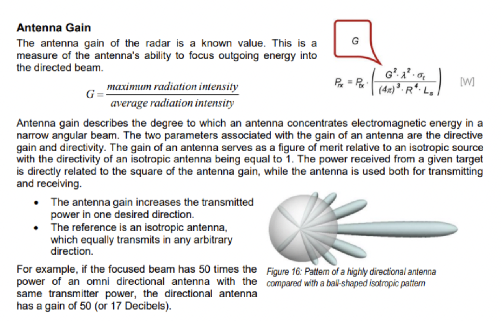
The same antenna is typically used during transmission and reception. For transmission, the total energy will be processed by the antenna. However, for reception, the antenna receives only a small part of the incoming energy.
One property of the antenna to consider is the antenna aperture, which describes how well an antenna can pick up power from an incoming electromagnetic wave. As a receiver, antenna aperture can be visualized as the area of a circle constructed broadside to incoming radiation where all radiation passing within the circle is delivered by the antenna to a matched load.
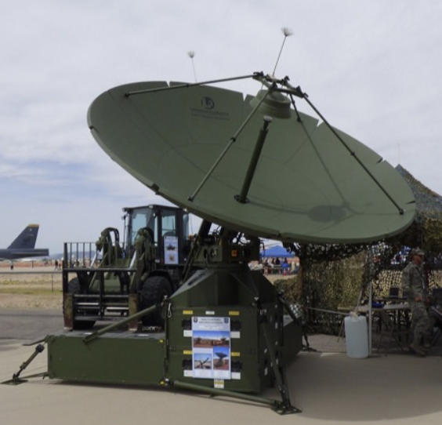
An isotropic antenna has an aperture of (lambda squared) / 4 pi. An antenna with a gain of G has an aperture of G x (lambda squared) / 4 pi. The dimensions of an antenna depend on their gain G and on the wavelength lambda used, as the expression of the radar transmitter's frequency. The higher the frequency, the smaller the antenna, or the higher its gain at equal dimensions. Large dish antennas, like radar antennas, have an aperture nearly equal to their physical area and have a gain of normally 32 up to 40 decibels. Changes in the quality of the antenna (antenna irregularities, like deformations or ice) can, however, have a very big influence.
The size and ability of a target to reflect radar energy can be summarized into a single term, the radar cross section (RCS), which has units of m².
If absolutely all of the incident radar energy on the target were reflected equally in all directions, then the radar cross section would be equal to the target's cross-sectional area as seen by the transmitter. In practice, some energy is absorbed and the reflected energy is not distributed equally in all directions. The radar cross section is therefore quite difficult to estimate and is normally determined by measurement. The target radar cross-sectional area depends on the target's physical geometry and exterior features, the direction of the illuminating radar, the radar transmitter frequency, and the material types in the reflecting surface.
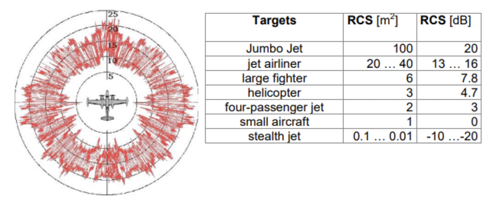
In a pulse compression system, the range resolution of the radar is given by the length of the pulse at the output jack of the pulse-compressing stage. The ability to compress the pulse depends on the bandwidth of the transmitted pulse (BWtx), not on its pulse width. As a matter of course, the receiver needs at least the same bandwidth to process the full spectrum of the echo signals.
This allows very high resolution (and a small radar range resolution cell) to be obtained with long pulses, and thus with a higher average power. The figure below shows the variation of slant range resolution with bandwidth. A 1.5-meter resolution will be achieved with a -3 dB bandwidth of 100 MHz, theoretically.
R is the target range term in the equation. This value can be calculated by measuring the time it takes the signal to return. The range is important since the power obtained from a reflecting object is inversely related to the square of its range from the radar. Free-space path loss is the loss in signal strength of an electromagnetic wave that would result from a line-of-sight path through free space, with no obstacles nearby to cause reflection or diffraction. The power loss is proportional to the square of the distance between the radar transmitter and the reflecting obstacle.
The expression for free-space path loss actually encapsulates two effects. First, the spreading out of electromagnetic energy in free space is determined by the inverse square law. The intensity (or illuminance or irradiance) of linear waves radiating from a source (energy per unit of area perpendicular to the source) is inversely proportional to the square of the distance from the source. An area of surface A1 (the same size as an area of surface A2) twice as far away receives only a quarter of the energy. The same is true for both directions, for the transmitted and the reflected signal. So this quantity is used as a square in the equation.
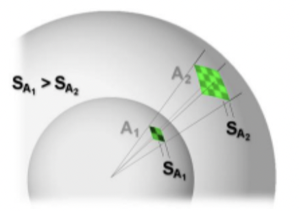
This is the sum of all loss factors of the radar. It is a value calculated to compensate for attenuation by precipitation, atmospheric gases, and receiver detection limitations. The attenuation by precipitation is a function of precipitation intensity and wavelength. For atmospheric gases, it is a function of elevation angle, range, and wavelength. Since all of this is taken into account, for example, 3 decibels of loss weakens all signals by half the value. Some of these losses are unavoidable. Some can be influenced by radar technicians.
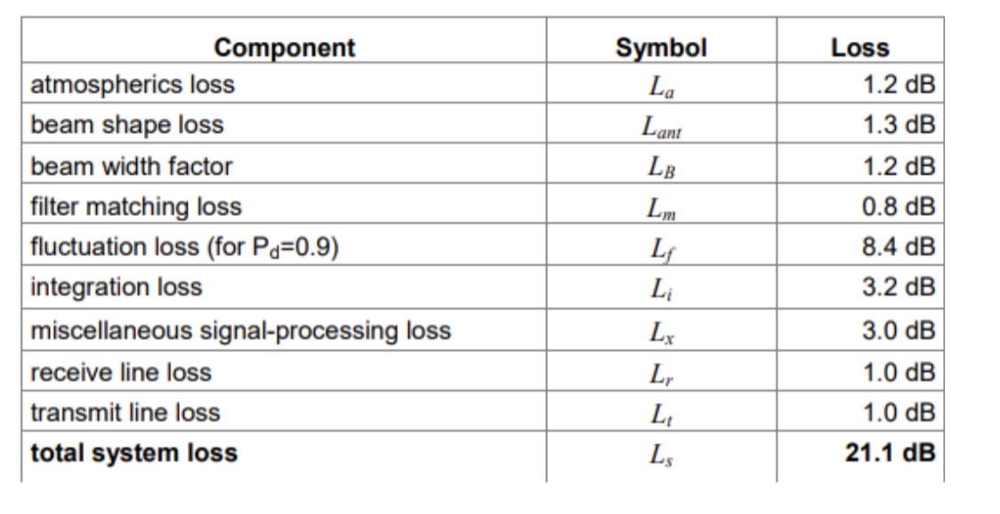
The more transmitted power, the longer the range for your radar system. However, the fourth root in the equation for transmitted power highlights a difficult reality. To double the maximum range of your radar system, you need to increase the power by 16 times. The inversion of this argument is also true: if the power is reduced slightly, the effect on the maximum range is very small.
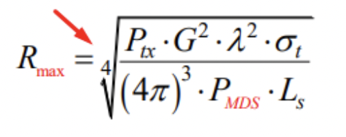
The minimum discernible signal is defined as the useful echo power at the reception antenna, which can be seen on your scope with a clear peak. The minimum discernible signal at the receiver input jack leads to the maximum range of the radar when all other nominal variables are considered constant. A reduction of the minimal received power of the receiver gives an increase in the maximum range. For every receiver there is a certain receiving power required. This smallest workable received power is frequently called MDS, the minimum discernible signal or minimum detectable signal, in radar technology. Typical radar values of the MDS echo lie in the range of -104 dBm to -113 dBm.
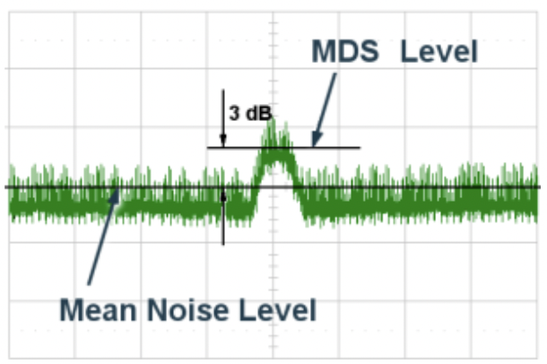
The value of the MDS echo depends on the signal-to-noise ratio, defined as the ratio of the signal energy to the noise energy. All radar, as with all electronic equipment, must operate in the presence of noise. The main source of noise is termed thermal noise and is due to agitation of electrons caused by heat. The noise can arise from:
The overall receiver sensitivity is directly related to the noise figure of the radar receiver. It becomes clear that a low noise figure is accomplished by a good front-end design. A very low noise figure receiver will have noise minimized at the first block. This component is usually characterized by a low noise figure with high gain. Typically, this will be a low-noise preamplifier (LNA).
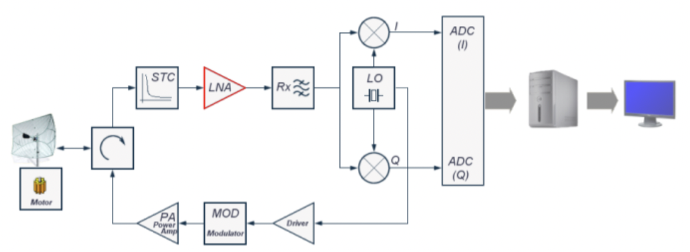
Reducing noise in radar designs is a critical engineering task to improve the overall performance of the system. Berkeley Nucleonics offers impedance tuners for noise parameter measurements, which allow design engineers to optimize matching circuits and achieve the lowest possible noise figures.
Some designs can be improved further with cryogenic efforts, keeping critical components operating at very cold temperatures.
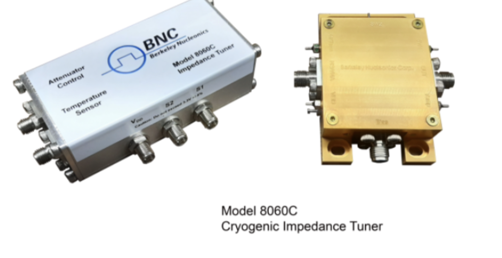
Accuracy is the degree of conformance between the estimated or measured position and/or the velocity of a target at a given time and the true position or velocity. Radio navigation performance accuracy is usually presented as a statistical measure of system error and is specified as:
The stated value for accuracy represents the uncertainty of the reported value with respect to the true value and indicates the interval in which the true value lies with a stated probability.
The theoretical maximum accuracy with which a distance can be measured depends on the accuracy of the runtime measurement.
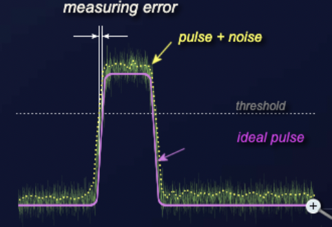
Note: For a complete understanding of pulse generators and their use in radar simulation testing, take the companion course free at academy.berkeleynucleonics.com: TMI01, Precision Timing Terminology and Fundamentals.
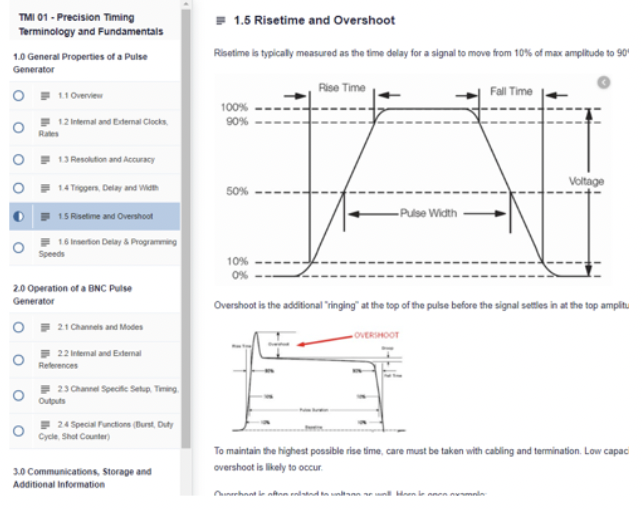
A random error occurs with a pulse radar when the rising edge of the echo signal is distorted by noise. Since the pulse is always superimposed with noise during measurement, and the pulse plus the noise is measured as amplitude, the pulse is also displayed larger than it is in reality. This shifts the pulse edge and causes a measurement error in the runtime measurement.
The figure above shows the influence of noise on the detectable edge of the echo pulse. The solid magenta line shows an almost ideal trapezoidal impulse with quite steep edges. This pulse cannot become quite rectangular because that would require an infinite bandwidth. The time is measured at a point determined by a threshold value, usually at 0.707 of the maximum voltage. However, this pulse is superimposed with the noise level (green). Only a voltage can be measured, which is formed by the sum of the instantaneous voltage of the pulse and the noise (dotted yellow line). This voltage exceeds the threshold value at an earlier time than the clean pulse. The difference is the random measurement error caused by the noise.
If the duration of the pulse is known (which cannot be the case with primary radar but can be with secondary radar), then this random error can be reduced mathematically by simultaneous evaluation of the front and rear edges of the pulse.
A false alarm is an erroneous radar target detection decision caused by noise or other interfering signals exceeding the detection threshold. In general, it is an indication of the presence of a radar target when there is no valid target. The false alarm rate (FAR) is calculated from the number of false targets per PRT over the number of range cells. False alarms are generated when thermal noise exceeds a preset threshold level, by the presence of spurious signals (either internal to the radar receiver or from sources external to the radar), or by an equipment malfunction. A false alarm may be manifested as a momentary blip on a cathode ray tube (CRT) display, a digital signal processor output, an audio signal, or by all of these means. If the detection threshold is set too high, there will be very few false alarms, but the signal-to-noise ratio required will inhibit detection of valid targets. If the threshold is set too low, the large number of false alarms will mask detection of valid targets.
The received and demodulated echo signal is processed by threshold logic. This threshold shall be balanced so that, above a certain amplitude, wanted signals are able to pass and noise will be removed. Since high noise exists in the mixed signal tops, which lie in the range of small wanted signals, the optimized threshold level shall be a compromise. Wanted signals shall on the one hand reach the indication of minimal amplitude; on the other hand the false alarm rate may not increase. The probability of detection is the ratio of detected targets to all possible blips. The system must detect, with greater than or equal to 80 percent probability at a defined range, a one-square-meter radar cross section.
In order to overcome target size fluctuations, many radar use two or more different illumination frequencies. Frequency diversity typically uses two transmitters operating in tandem to illuminate the target with two separate frequencies.
With multiple-frequency radar it is possible to achieve a fundamentally higher maximum reach, equal probability of detection, and equal false alarm rate. If the probability of detection and the false alarm rate are equal in both systems, two or more frequencies would yield a higher maximum range. The smoothing of the fluctuations in a complex echo signal is the physical basis for this.
If the backscatter of the first frequency has a maximum, then the backscatter of the second frequency has a minimum. The sum of both signals does not alter the average of the single signals. In addition to the 3 dB gain in performance achieved by using two transmitters in parallel, the use of two separate frequencies improves the radar performance by decreasing the fluctuation loss by, typically, 2.8 dB.
In order to increase the detection probability of frequency diversity radar, two pulses of different frequencies are radiated one after another at very short intervals. Assuming a sufficient gap between the frequencies of the radiated pulses exists, echo signals of a fluctuating target are statistically uncorrelated. Smoothing of fluctuation can be expressed in terms of signal-to-noise ratio gain, maximum range gain, or improved detection probability.
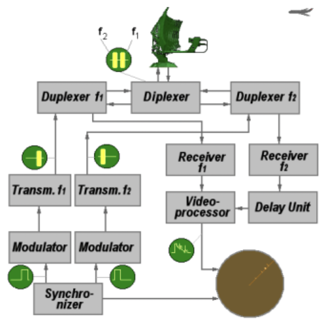
The accuracy of the distance measurement depends essentially on the noise, or rather, on the size of the noise in relation to the impulse. This quantity is described by the signal-to-noise ratio (SNR). The size of the noise itself also depends on the bandwidth. The slope of the pulse edge also depends on the bandwidth. For a signal-to-noise ratio considerably higher than 1, a relationship exists between these variables.
Where:
However, the bandwidth is also significant for the radar range resolution, Sr = c / 2B. Thus the maximum achievable accuracy can also be represented as a function of the radar range resolution. From this, it can be seen that the maximum achievable accuracy in range determination must be considerably better than the range resolution.
With a pulse radar, the runtime is generally measured from the rising edge of the transmit pulse to the rising edge of the echo signal. The accuracy of this measurement depends on the magnitude of the clock frequency for this time measurement. Measurement results between the cycles are not possible and generate a systematic measurement error. Practically, the accuracy depends on the size of the individual range cells in signal processing. ICAO recommends a range cell size of 1/128 NM, that is, about 14.5 m, for air traffic control air surveillance radar, which corresponds to a time interval of almost 10 nanoseconds.
With a CW radar, the measurement of the phase shift of the received signal relative to the current phase of the transmitter may contain (albeit ambiguous) distance information.
The accuracy of an FMCW radar also depends on the transmitter, especially on the slope and linearity of the frequency drift.
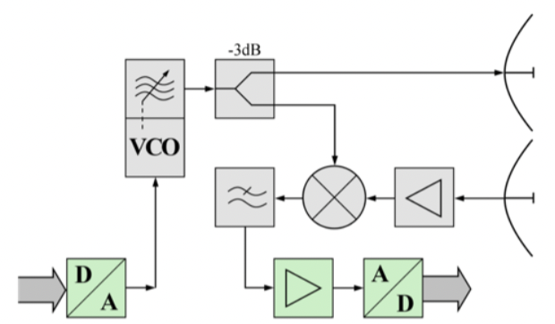
The accuracy of the angle measurement depends both on internal signal processing methods and on external conditions. Anomalous propagation conditions, which frequently occur due to changes in air pressure in height angle measurements, can in principle also occur in side angles and form a random error. Systematic error, however, is more typically internal.
Nonstandard or anomalous propagation (known as anaprop) occurs when the refractive index is modified by changes in temperature gradient, pressure or water vapor content. These parameters can give rise to a wide range of nonstandard propagation conditions. One of the most common in Europe is temperature inversion, which occurs when heat radiates from the ground on clear nights. The ground temperature falls but the upper levels of the atmosphere remain comparatively warm. This temperature gradient is the reverse of the normal negative temperature gradient. The result of this temperature inversion is to duct the transmitted energy along the ground, greatly extending the normal range of the radar.
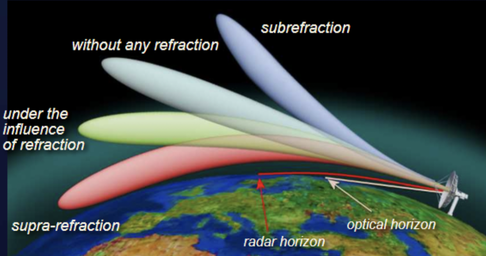
Under normal atmospheric conditions, the warmest air is found near the surface of the earth. The air gradually becomes cooler as altitude increases. At times, however, an unusual situation develops in which layers of warm air are formed above layers of cool air. This condition is known as temperature inversion. These temperature inversions cause channels, or ducts, of cool air to be sandwiched between the surface of the earth and a layer of warm air, or between two layers of warm air.
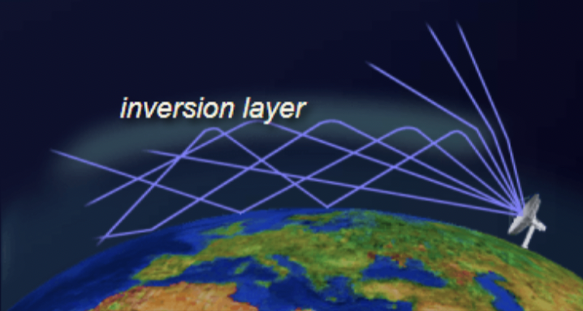
If a transmitting antenna extends into such a duct of cool air, or if the radio wave enters the duct at a very low angle of incidence, VHF and UHF transmissions may be propagated far beyond normal line-of-sight distances. When ducts are present as a result of temperature inversions, good reception of VHF and UHF television signals from a station located hundreds of miles away is not unusual. These long distances are possible because of the different densities and refractive qualities of warm and cool air. The sudden change in density when a radio wave enters the warm air above a duct causes the wave to be refracted back toward earth. When the wave strikes the earth or a warm layer below the duct, it is again reflected or refracted upward and proceeds on through the duct with a multiple-hop type of action. An example of the propagation of radio waves by ducting is shown in the figure.
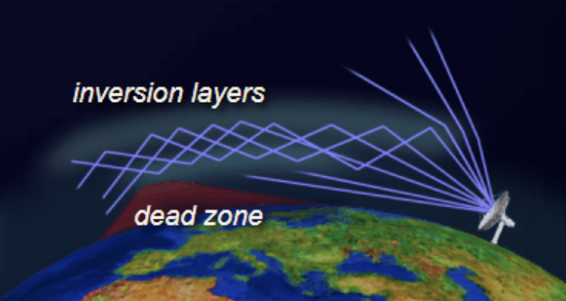
For example, the angle determination by the sliding window is a rather inaccurate procedure. In practice, the half-width of the antenna is only divided by the number of quantizations of the method (e.g., 8 or 16 pulse periods) and thus results in a systematic error of the order of magnitude of up to one degree. Other correlations can also interpolate intermediate values and are therefore much more accurate. One such method is the center of mass correlation.
Center of mass correlation. The correlator first assembles the hit pattern, including azimuth, over a prescribed area of range-azimuth cells. These are then grouped in range and then in azimuth. The plot position is computed by algorithms, which determine the center of mass of the signal processor output. This method makes better use of the signal information and provides more accurate positional declarations.
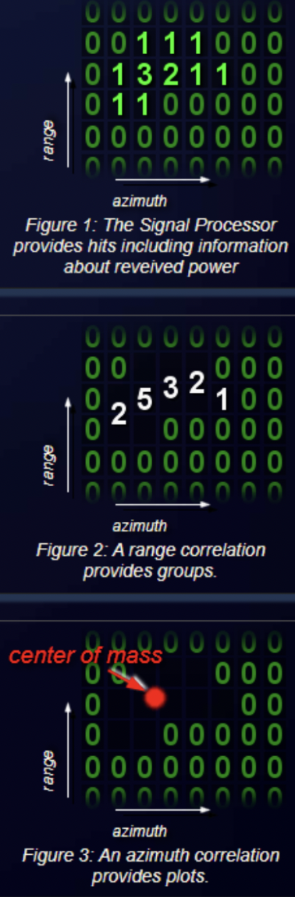
The best accuracy is currently achieved with the conical scan or the monopulse method.
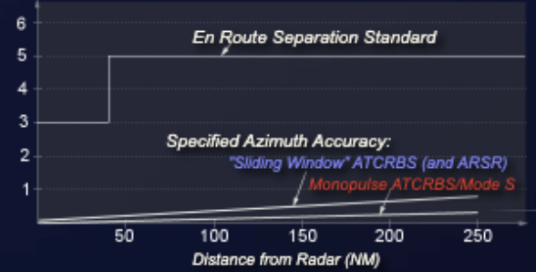
The measurement is performed exactly as the measurement result is defined: the position measured by the radar is compared with the actual position of the target. In the case of an air surveillance radar, a test flight is carried out for this purpose. On board the Learjet 35 aircraft there is a recorder that records the current position of the aircraft using differential GPS with an accuracy of less than one meter. At the same time, the flight path is also recorded in the radar unit. Since both recorders are synchronized via the time base also provided by the GPS system, the positions can then be exactly compared with each other.
Statistical methods are also used for the calculation. Obvious erroneous measurements are excluded from the calculation because the systematic error of the radar unit is what is to be calculated. This does not mean, however, that many hits are necessary (perhaps to achieve a good value). If the radar uses monopulse technology, then a value is also determined for each pulse. If the radar determines the position using the sliding window method, then the respective value is determined according to the concrete number of hits required.
For good accuracy in distance determination, a stable and steep edge of the radar pulse is required. This steep pulse edge is often not visible when intrapulse modulation is used. But here it has to be said that the distance can only be measured after the pulse compression. At this point, the now-compressed impulse is present again with a very good edge steepness.
The only condition for the measurement is that the radar operates in an interference-free environment. Interference-free means the received echo signal is not superimposed by external interference signals. This also includes the noise level. A useful measurement is therefore only possible if the signal strength of the measured echo signal of the aircraft is much higher than the noise level. Finally, a flight calibration should detect possible additional systematic errors, and not random errors.
Check your understanding. Five quick questions on the fundamentals of radar measurement.
Take the interactive quiz →